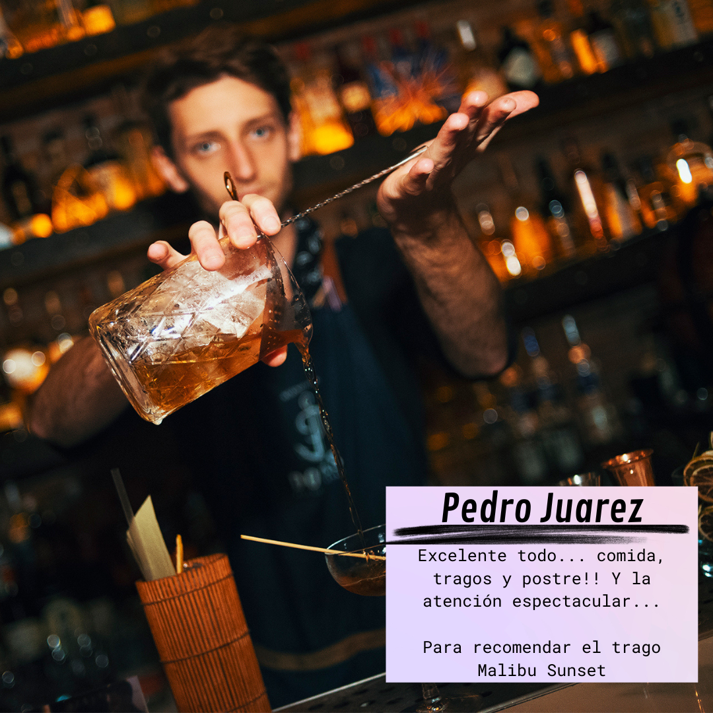
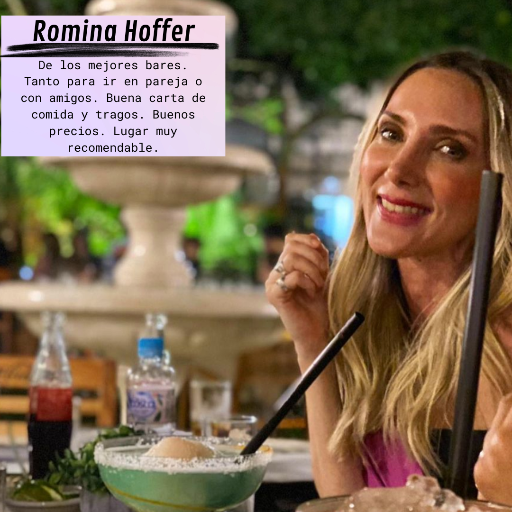

¿Qué es Lgram y cómo funciona?
Somos una plataforma online en la que se recogen cientos de opiniones en torno a determinados negocios del sector turístico (hoteles, restaurantes, bares, discotecas, cruceros, etc). El sector del turismo vive más que nunca pendiente del boca a boca digital. Es decir, de las opiniones que vierten sus clientes sobre ellos. En este sentido, Lgram es todo un ejemplo dentro del rubro.

